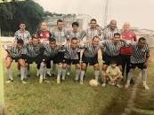
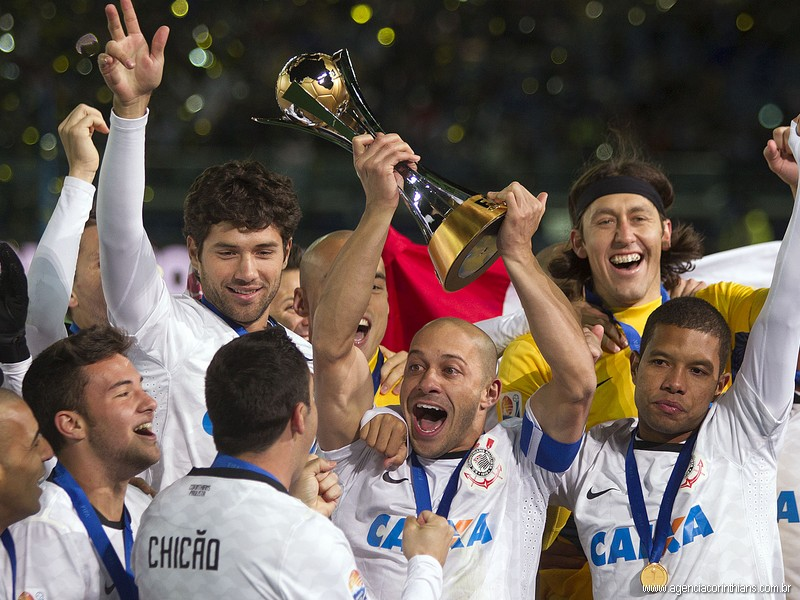
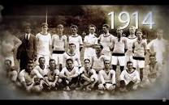

Corinthias
1910 a Fundação

Às 20h30 do dia 1º de setembro, à luz de um lampião, na esquina das ruas José Paulino e Cônego Martins, no bairro do Bom Retiro, o grupo de operários formado por Anselmo Corrêa, Antônio Pereira, Carlos Silva, Joaquim Ambrósio e Raphael Perrone fundaram o Sport Club Corinthians Paulista. Com mais oito rapazes, foi formada a reunião dos primeiros integrantes e sócio-fundadores do Timão, que teve seu nome inspirado na equipe inglesa Corinthian-Casuals Football Club, que fazia excursão pelo Brasil. O presidente escolhido por eles foi o alfaiate Miguel Battaglia, que, já no primeiro momento, afirmou: “O Corinthians vai ser o time do povo e o povo é quem vai fazer o time”. Um terreno alugado na Rua José Paulino foi aplainado, virou campo e foi lá que, já no dia 14 de setembro, o primeiro treino foi realizado diante de uma plateia entusiasmada, que garantiu: “Este veio para ficar!”.
Clique aqui para saber mais
1911 Fora de Casa
Primeiro jogo do Timão fora da cidade de São Paulo Na manhã de 17 de setembro, vitória sobre a Ponte Preta em Campinas por 1 a 0.
Clique aqui para saber mais
1912 Jogos na Várzea
Registro de jogos na várzea cujos resultados não foram encontrados. Os adversários foram Paulista, Concórdia, Botafogo, Minas Gerais, Maranhão e Vila Mariana.
Clique aqui para saber mais
1913 Estreia no Paulista
"Pela primeira vez, o Corinthians participou do campeonato da Liga Paulista de Futebol".. O Alvinegro terminou em quarto lugar entre cinco equipes.
Clique aqui para saber mais
"> 1914 O primeiro título
Primeiro título do Sport Club Corinthians Paulista. Com 10 vitórias em 10 jogos disputados, o Timão marcou 37 gols e venceu a última partida por 3 a 0, contra o Lusitano, no Parque Antártica. O atacante Neco foi o artilheiro do torneio com 12 gols. O Alvinegro conquistou o Campeonato Paulista com uma rodada de antecedência. No dia 08 de novembro, a equipe derrotou o Campos Elyseos por 4 a 0 e sagrou-se campeã com a seguinte escalação: Aristides, Fúlvio e Casemiro González; Police, Bianco e César Nunes; Américo, Peres, Amílcar, Apparício e Neco.